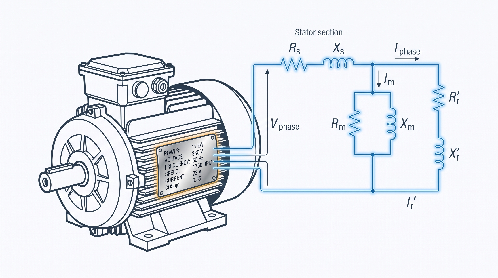

Parâmetros do motor de indução a partir da placa: a metodologia que uso em campoInduction motor parameters from the nameplate: the methodology I use in the field

Recorrentemente encontro problemas em comissionamento de inversores de baixa tensão acionando motores de indução. O procedimento de autoajuste do drive é sempre o melhor caminho para resolver 99% dos casos, mas, de tempos em tempos, deter a teoria e o conhecimento resolve o restante. Há um tempo venho usando uma metodologia própria para estimar os parâmetros do circuito equivalente do motor a partir só dos dados de placa — recentemente resolvi aprimorá-la, corrigir um punhado de simplificações que vinha carregando havia tempo, e disponibilizá-la a quem possa ser útil.In my day-to-day commissioning low-voltage drives on induction motors, the drive’s auto-tuning routine is almost always the best path — it solves 99% of the cases cleanly. But every so often you hit the remaining 1%, and that’s when knowing the theory pays off. I’ve been using my own methodology to estimate a motor’s equivalent-circuit parameters from nameplate data alone for a while now — I recently sat down to refine it, fix a handful of simplifications it had been carrying for too long, and put it out there for anyone who can use it.
Este post documenta essa metodologia — a que roda hoje por trás da calculadora de parâmetros de motor de indução. Cada seção abaixo corresponde a uma decisão de projeto tomada ao longo do caminho — junto com o exemplo (em Julia, executado de verdade, não pseudocódigo) que motivou a decisão.This post documents that methodology — the one that actually runs behind the induction motor parameter calculator today. Each section below corresponds to a design decision made along the way — together with the example (in Julia, actually executed, not pseudocode) that motivated it.
O motor de exemploThe example motor
Para acompanhar o texto com números de verdade, uso a placa de um motor real que fotografei em campo: um WEG W22 Premium trifásico de 5,5 kW, 380 V, 60 Hz, 4 polos, categoria N.To follow the text with real numbers, I use the nameplate of a real motor I photographed in the field: a three-phase WEG W22 Premium, 5.5 kW, 380 V, 60 Hz, 4 poles, design class N.
const P_N_kW = 5.5 # Potência nominal [kW]
const V_N = 380.0 # Tensão nominal de linha [V]
const f_N = 60.0 # Frequência nominal [Hz]
const polos = 4
const n_N = 1750.0 # Rotação nominal [rpm]
const I_N = 11.9 # Corrente nominal [A]
const η_N = 0.91 # Rendimento nominal [pu]
const cosφ_N = 0.77 # Fator de potência nominal [pu]
const Ip_In = 7.3 # Razão I_partida / I_nominal (de placa)
const categoria = "N" # Categoria de conjugado de partida (N ≈ NEMA B)O que a placa não diz: perdas mecânicasWhat the nameplate doesn’t tell you: mechanical losses
A placa nunca informa como as perdas totais se dividem — cobre do estator, cobre do rotor, núcleo, perdas suplementares (stray load) e atrito+ventilação. Sem essa divisão, não dá para inicializar \(R_1\), \(R_2\) e \(R_M\) com algo melhor que um chute às cegas. A saída é uma tabela normativa: de Almeida, Ferreira & Fong (“Standards for Efficiency of Electric Motors”, IEEE Ind. Appl. Magazine, 2011) publicam essa divisão em função da potência nominal, a partir de um levantamento estatístico de motores reais.The nameplate never tells you how total losses split — stator copper, rotor copper, core, stray-load, and friction+windage. Without that split, there’s no way to initialize \(R_1\), \(R_2\) and \(R_M\) with anything better than a blind guess. The way out is a normative table: de Almeida, Ferreira & Fong (“Standards for Efficiency of Electric Motors,” IEEE Ind. Appl. Magazine, 2011) publish that split as a function of rated power, from a statistical survey of real motors.
# Frações de perda por potência nominal (interpoladas na tabela — ver ref/valores.csv)
f_s, f_r, f_stray, f_c, f_fw = obter_fracoes_perdas(P_N_kW) # 0.46, 0.20, 0.06, 0.23, 0.05
P_loss_pu = 1.0/η_N - 1.0 # perdas totais, em pu da potência de EIXO — 0.0989 pu
k_r = f_s / f_r # 2.30 — razão de perdas Cu estator/rotor
R2 = s_N # chute inicial: R2 ≈ escorregamento nominal
R1 = k_r * s_N # chute inicial de R1, pela proporção da tabela
R_M = 1.0 / (f_c * P_loss_pu) # fecha o balanço de perdas do núcleoO pulo do gato é que o circuito equivalente calcula a potência eletromagnética — a desenvolvida no entreferro, descontadas só as perdas Joule do rotor. Atrito, ventilação e perdas suplementares acontecem depois disso, a caminho do eixo, e nenhum elemento do circuito os representa. Isso significa que o alvo de convergência não pode ser o valor de placa puro: tem que ser o valor de placa ajustado pela fração mecânica das perdas, sempre um pouco acima do que a placa informa.The equivalent circuit computes electromagnetic power — the power developed in the air gap, net only of the rotor’s Joule losses. Friction, windage and stray-load losses happen after that, on the way to the shaft, and no circuit element represents them. That means the convergence target can’t be the raw nameplate value: it has to be the nameplate value adjusted by the mechanical loss fraction, always a bit above what the plate reports.
Fechando o ramo magnetizanteClosing the magnetizing branch
Um dos caminhos para determinar \(X_M\) e \(R_M\) é iterá-los por ganho proporcional junto com todo o resto, disputando o mesmo grau de liberdade que a corrente e o fator de potência — o que deixa a convergência instável e o resultado dependente da ordem dos ajustes. Mas a placa já dá módulo e ângulo da corrente nominal (\(I_N\), \(\cos\varphi\)), o que é informação aproximada para achar a corrente de magnetização através de subtração fasorial, em forma fechada:One of the paths to determine \(X_M\) and \(R_M\) is to iterate them by proportional gain alongside everything else, fighting over the same degree of freedom as current and power factor — which makes convergence unstable and the result dependent on adjustment order. But the nameplate already gives the magnitude and angle of the rated current (\(I_N\), \(\cos\varphi\)), which is approximate information for finding the magnetizing current through phasor subtraction, in closed form:
# V_m = V1 - I1*(R1+jX1) (tensão no ramo magnetizante, pela queda no estator)
# I2 = V_m / (R2/s + jX2) (corrente de rotor, pela impedância do ramo série)
# Im = I1 - I2 (o que sobra é a corrente de magnetização)
Vm = complex(1.0, 0.0) - I1fasor * complex(R1, X1)
I2fasor = Vm / complex(R2/s_N, X2)
Im = I1fasor - I2fasor
Ym = Im / Vm # Y_m = 1/R_M + 1/(jX_M)
real(Ym) > 1e-9 && (R_M = 1.0/real(Ym)) # mantém o último valor válido se Y_m ainda não fechar fisicamente
-imag(Ym) > 1e-9 && (X_M = -1.0/imag(Ym))Com isso, \(|I_1|\) e \(\cos\varphi\) ficam exatos por construção — não sobra grau de liberdade disputado entre parâmetros que deveriam ser independentes. Nas primeiras iterações, antes de \(R_1\) e \(R_2\) estabilizarem, \(Y_m\) pode sair momentaneamente com parte real negativa — fisicamente impossível, já que \(I_1 = I_2 + I_M\). Por isso \(R_M\) e \(X_M\) só são atualizados quando o resultado é fisicamente válido; caso contrário, o valor da iteração anterior é mantido até o resto do circuito estabilizar.With this, \(|I_1|\) and \(\cos\varphi\) come out exact by construction — no degree of freedom is left contested between parameters that should be independent. In the first few iterations, before \(R_1\) and \(R_2\) settle, \(Y_m\) can momentarily come out with a negative real part — physically impossible, since \(I_1 = I_2 + I_M\). That’s why \(R_M\) and \(X_M\) are only updated when the result is physically valid; otherwise, the previous iteration’s value is kept until the rest of the circuit settles.
A dupla personalidade do motorThe motor’s split personality
A mesma corrente de partida usada para calibrar \(X_1+X_2\) também deveria, em tese, servir para prever o torque de partida — só que o torque calculado desvia sistematicamente menor que o de qualquer motor real. Um exemplo de livro-texto com dados medidos (Fitzgerald, Electric Machinery, Exemplo 6.5) mostra a explicação: aquela máquina tem dois ensaios de rotor bloqueado, um a 15 Hz e outro a 60 Hz. O primeiro dá os parâmetros “limpos” de regime; o segundo, na frequência de rede, mostra o efeito pelicular em ação nas barras do rotor — a resistência do rotor sobe 2,84 vezes, e a reatância de dispersão cai para 0,65 do valor de regime (a corrente de partida, de 5 a 8 vezes a nominal, também satura os caminhos de dispersão magnética, empurrando a reatância pra baixo pelo mesmo motivo).The same starting current used to calibrate \(X_1+X_2\) should, in theory, also predict the starting torque — except the computed torque deviates systematically lower than any real motor’s. A textbook example with measured data (Fitzgerald, Electric Machinery, Example 6.5) shows the explanation: that machine has two locked-rotor tests, one at 15 Hz and one at 60 Hz. The first gives the “clean” running parameters; the second, at line frequency, shows skin effect acting on the rotor bars in practice — rotor resistance rises 2.84×, and leakage reactance drops to 0.65× the running value (the starting current, 5 to 8 times rated, also saturates the leakage flux paths, pushing reactance down for the same reason).
Um único conjunto de parâmetros constantes simplesmente não representa a máquina nas duas condições. A solução foi manter dois conjuntos — regime e partida — ligados por dois fatores, \(K_R\) e \(K_X\), tabelados pela categoria de conjugado de partida do motor (N, A, H, D — equivalentes a NEMA B, A, C e D):A single set of constant parameters simply does not represent the machine under both conditions. The fix was to keep two parameter sets — running and starting — linked by two factors, \(K_R\) and \(K_X\), tabulated by the motor’s starting-torque design class (N, A, H, D — equivalent to NEMA B, A, C and D):
FATORES_PARTIDA = Dict(
"N" => (kR=2.0, kX=0.8), # barra profunda, a mais comum (≈ NEMA B)
"A" => (kR=1.2, kX=0.85), # barra rasa de baixa resistência (≈ NEMA A)
"H" => (kR=3.0, kX=0.75), # dupla gaiola, conjugado de partida alto (≈ NEMA C)
"D" => (kR=1.1, kX=0.85), # barra de alta resistência, escorregamento alto (≈ NEMA D)
)Para o WEG de 5,5 kW (categoria N), isso dá o circuito de regime abaixo — usado no ponto nominal — e um segundo conjunto de partida, usado só para calcular o rotor bloqueado e a sequência negativa:For the 5.5 kW WEG (design class N), this gives the running circuit below — used at the rated point — and a second starting set, used only to compute locked rotor and the negative-sequence circuit:
| ParâmetroParameter | RegimeRunning |
|---|---|
| R₁ (Ω) | 0.6894 |
| R₂ (Ω) | 0.6113 |
| X₁ (mH) | 2.730 |
| X₂ (mH) | 4.095 |
| Xₘ (mH) | 80.66 |
Erro contra os dados nominais: potência mecânica 0,01%, corrente 0,00%, fator de potência 0,00%, rendimento 0,20% — todos dentro da tolerância de 2%.Error against rated data: mechanical power 0.01%, current 0.00%, power factor 0.00%, efficiency 0.20% — all within the 2% tolerance.
Quando o catálogo dá o conjugado de partidaWhen the catalogue gives you starting torque
Tabela por categoria é um bom ponto de partida, mas é só isso — um ponto de partida. Se o usuário tiver o conjugado de partida do catálogo do fabricante (\(C_p/C_n\)), dá pra fazer melhor: em vez de tabelar \(K_R\), ele vira a incógnita resolvida por bisseção, ajustada até o circuito reproduzir o conjugado de partida informado — o mesmo papel que \(I_p/I_n\) já cumpre para \(X_1+X_2\).A table by design class is a good starting point, but that’s all it is — a starting point. If the user has the starting torque from the manufacturer’s catalogue (\(C_p/C_n\)), you can do better: instead of tabulating \(K_R\), it becomes the unknown solved by bisection, adjusted until the circuit reproduces the reported starting torque — the same role \(I_p/I_n\) already plays for \(X_1+X_2\).
O teste mais forte que tenho até hoje: a máquina do Fitzgerald (dupla gaiola, categoria H, \(C_p/C_n = 0,87\) de catálogo) resolve para \(K_R = 2,95\) — contra o \(K_R = 2,84\) medido diretamente nos dois ensaios de rotor bloqueado dela. Duas fontes de dado completamente independentes, a 4% de distância uma da outra.The strongest test I have so far: the Fitzgerald machine (double-cage, class H, catalogue \(C_p/C_n = 0.87\)) solves to \(K_R = 2.95\) — against the \(K_R = 2.84\) measured directly from its two locked-rotor tests. Two completely independent data sources, 4% apart.
Sequência negativa não herda os parâmetros de regimeNegative sequence doesn’t inherit the running parameters
Para desequilíbrio de tensão, o campo de sequência negativa gira em sentido contrário ao rotor — o escorregamento efetivo visto por ele é \((2-s)\), não \(s\). Não basta trocar esse divisor e reaproveitar \(R_2\), \(X_2\) de regime: a razão é a mesma da dupla personalidade do motor — a frequência induzida no rotor por esse campo é \(f_2 \approx (2-s)\cdot f_1 \approx 2f_1\), maior até que a do próprio ensaio de rotor bloqueado. O mesmo efeito pelicular que distingue partida de regime se aplica com ainda mais força aqui (confirmado contra Ion Boldea, Induction Machines Handbook, seções sobre alimentação desequilibrada e sequências).Under voltage unbalance, the negative-sequence field rotates opposite to the rotor — the slip it sees is \((2-s)\), not \(s\). Simply swapping that divisor and reusing the running \(R_2\), \(X_2\) isn’t enough: the reason is the same as in the motor’s split personality — the frequency induced in the rotor by that field is \(f_2 \approx (2-s)\cdot f_1 \approx 2f_1\), higher even than the locked-rotor test’s own frequency. The same skin effect that separates starting from running applies with even more force here (confirmed against Ion Boldea, Induction Machines Handbook, the sections on unbalanced supply and sequence circuits).
Para o WEG de 5,5 kW, uma tensão de sequência negativa de mesma magnitude que a nominal produziria 89,3 A — mais de 7 vezes a corrente nominal — com fator de potência de 0,43. Na prática, um desequilíbrio de tensão de apenas 2% já bastaria para produzir uma corrente de sequência negativa considerável, e é por isso que motores de indução são tão sensíveis a desequilíbrio de tensão entre fases.For the 5.5 kW WEG, a negative-sequence voltage of the same magnitude as rated would produce 89.3 A — more than 7 times rated current — at a power factor of 0.43. In practice, a mere 2% voltage unbalance is already enough to produce a considerable negative-sequence current, which is why induction motors are so sensitive to phase voltage unbalance.
Trazendo o multímetro para o jogoBringing the multimeter into the game
Tudo até aqui parte só de dados de placa. Mas se o usuário tem a máquina em mãos, dois ensaios simples melhoram a estimativa sem exigir nada além de um multímetro e, opcionalmente, um variador de tensão.Everything so far starts only from nameplate data. But if the user has the machine in hand, two simple tests improve the estimate without requiring anything beyond a multimeter and, optionally, a variac.
Resistência de fase (DC). \(R_1\) nunca é medido no caminho normativo — vem só da proporção tabelada a partir das perdas mecânicas. Com a resistência de fase medida (terminal a terminal, num motor de 6 terminais, evitando qualquer conversão de ligação Y/Δ), ela substitui esse chute inicial, corrigida da temperatura do ensaio para uma referência “a quente” pela fórmula clássica do cobre:Phase resistance (DC). \(R_1\) is never measured in the normative path — it only comes from the tabulated ratio derived from mechanical losses. With the measured phase resistance (terminal to terminal, on a 6-terminal motor, avoiding any Y/Δ connection conversion), it replaces that initial guess, corrected from the test temperature to a “hot” reference via the classic copper formula:
O ajuste de \(R_1\) contra a eficiência continua rodando por cima desse valor medido — ele absorve o resíduo do efeito pelicular CA (a medição é DC) e da incerteza dessa referência de temperatura, então não é preciso modelar os dois efeitos à parte.The efficiency-matching adjustment of \(R_1\) still runs on top of this measured value — it absorbs the residual from AC skin effect (the measurement is DC) and from the uncertainty in that temperature reference, so there’s no need to model both effects separately.
Rotor bloqueado. Tensão e corrente de um ensaio de rotor bloqueado (tipicamente em tensão reduzida, para não superaquecer o motor) servem de conferência cruzada: escalando a corrente linearmente até a tensão nominal, comparo a razão de partida implícita com o \(I_p/I_n\) de placa. Se divergirem mais de 15%, o app avisa — pode ser erro de leitura, saturação forte na tensão de ensaio, ou um dos dois dados errado.Locked rotor. Voltage and current from a locked-rotor test (typically at reduced voltage, to avoid overheating the motor) serve as a cross-check: scaling the current linearly up to rated voltage, I compare the implied starting-current ratio against the nameplate’s \(I_p/I_n\). If they diverge by more than 15%, the app warns — it could be a reading error, strong saturation at the test voltage, or one of the two values being wrong.
ReferênciasReferences
- A. T. de Almeida, F. J. T. E. Ferreira, J. A. C. Fong, “Standards for Efficiency of Electric Motors,” IEEE Industry Applications Magazine, Jan/Feb 2011.
- A. E. Fitzgerald, C. Kingsley, S. D. Umans, Electric Machinery, 7ª ed. (McGraw-Hill, 2013), Cap. 6, Exemplo 6.5.
- I. Boldea, Induction Machines Handbook, 3ª ed. (CRC Press) — capítulos sobre alimentação com tensão desequilibrada e operação de geradores de indução em desequilíbrio.
- IEEE Std 112-2017, Standard Test Procedure for Polyphase Induction Motors and Generators.
- NEMA MG 1-2016, Motors and Generators.